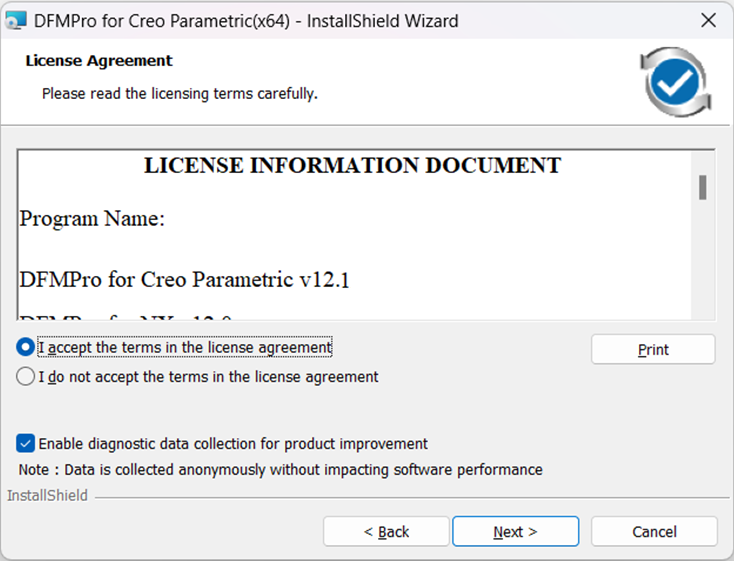
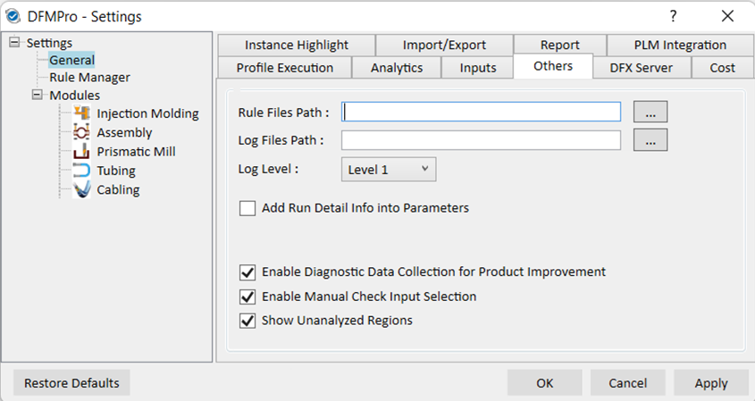

マシンにインストール後、DFMPro メニューで  Start DFMPro ボタンを選択します。
Start DFMPro ボタンを選択します。
お客様側から DFMPro の使用状況データを収集する目的は、製品の品質と性能を向上させることです。
既定では、DFMPro の使用状況データを収集するために、製品改善のための診断データ収集を有効化 チェックボックスが選択されています。このチェックボックスの選択を解除すると、このオプションを無効化できます。
インストール時に 製品改善のための診断データ収集を有効化 チェックボックスが選択されている場合、使用状況データの共有を停止（オプトアウト）するには、DFMPro-Settings ダイアログボックスを使用します。

本ソフトウェアは、ユーザーや組織に固有のデータを収集せず、またデータ収集が製品の性能に影響することはありません。ただし、取得されるデータは限定された一部に限られます。
収集されるデータの例を以下に示します。
製品名: 例：DFMPro for Creo Parametric
DFMPro for Creo Parametric のバージョン
ビルドバージョン: XXXX
言語: 例：US English
イベント情報
実行情報
ルール名および実行ステータス
使用されたプロセス（例：Turn、Mill など）
既定では、製品改善のための診断データ収集を有効化 オプションは常にオンになります。以下のいずれかの方法でインストールした後、使用状況データの共有を停止（オプトアウト）したい場合は、次の手順に従ってください。
標準インストール
サイレントインストール
コピー＆ペースト インストール
マシンにインストール後、DFMPro メニューで Start DFMPro ボタンを選択します。
DFMPro ユーザーインターフェースで Settings ボタンをクリックし、DFMPro - Settings ダイアログボックスを開きます。
または
以下に記載のインストール先にある DFXSettingApplication.exe ファイルを選択し、DFMPro - Settings ダイアログボックスを起動します。
例：C:\Program Files\Geometric\DFMPro for Creo Parametric(x64)\DFMPro
Others タブで、製品改善のための診断データ収集を有効化 チェックボックスがオンになっていることを確認します。

このオプションを無効にするには、チェックボックスの選択を解除します。
コマンドが設定されると、オプトアウトのインストールタイムラインが、データ追跡を停止するためのオプトアウト信号を送信します。